Plots mathematical expressions in one and two variables.
plotFun( object, ..., plot = trellis.last.object(), add = NULL, under = FALSE, xlim = NULL, ylim = NULL, npts = NULL, ylab = NULL, xlab = NULL, zlab = NULL, filled = TRUE, levels = NULL, nlevels = 10, labels = TRUE, surface = FALSE, groups = NULL, col = trellis.par.get("superpose.line")$col, col.regions = topo.colors, type = "l", lwd = trellis.par.get("superpose.line")$lwd, lty = trellis.par.get("superpose.line")$lty, alpha = NULL, discontinuities = NULL, discontinuity = 1, interactive = rstudio_is_available() )
Arguments
| object | a mathematical expression or a function "of one variable" which will
converted to something intuitively equivalent to |
|---|---|
| ... | additional parameters, typically processed by
Additionally, these arguments can be used to specify parameters for the function being plotted and to specify the plotting window with natural names. See the examples for such usage. |
| plot | a trellis object; by default, the most recently created trellis plot.
When |
| add | if |
| under | if |
| xlim | limits for x axis (or use variable names, see examples) |
| ylim | limits for y axis (or use variable names, see examples) |
| npts | number of points for plotting. |
| ylab | label for y axis |
| xlab | label for x axis |
| zlab | label for z axis (when in surface-plot mode) |
| filled | fill with color between the contours ( |
| levels | levels at which to draw contours |
| nlevels | number of contours to draw (if |
| labels | if |
| surface | draw a surface plot rather than a contour plot |
| groups | grouping argument ala lattice graphics |
| col | vector of colors for line graphs and contours |
| col.regions | a vector of colors or a function ( |
| type | type of plot ( |
| lwd | vector of line widths for line graphs |
| lty | vector of line types for line graphs |
| alpha | number from 0 (transparent) to 1 (opaque) for the fill colors |
| discontinuities | a vector of input values at which a function is
discontinuous or |
| discontinuity | a positive number determining how sensitive the plot is to
potential discontinuity. Larger values result in less sensitivity. The default is 1.
Use |
| interactive | a logical indicating whether the surface plot should be interactive. |
Value
a trellis object
Details
makes plots of mathematical expressions using the formula syntax. Will
draw both line plots and contour/surface plots (for functions of two variables).
In RStudio, the surface plot comes with sliders to set orientation.
If the colors in filled surface plots are too blocky, increase npts
beyond the default of 50, though npts=300 is as much as you're likely to ever need.
See examples for overplotting a constraint function on an objective function.
Examples
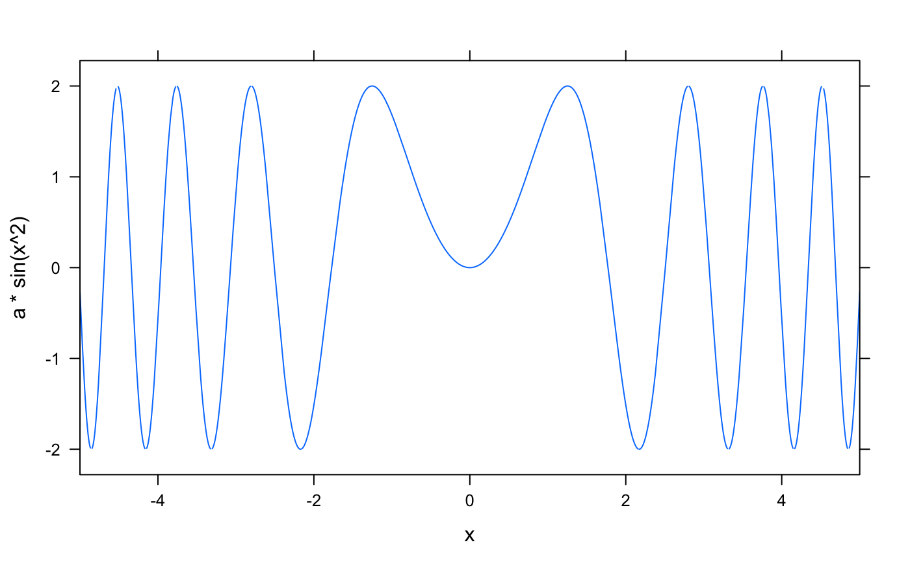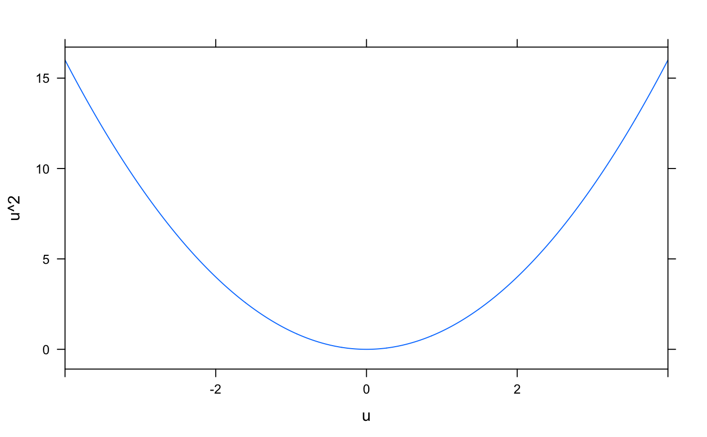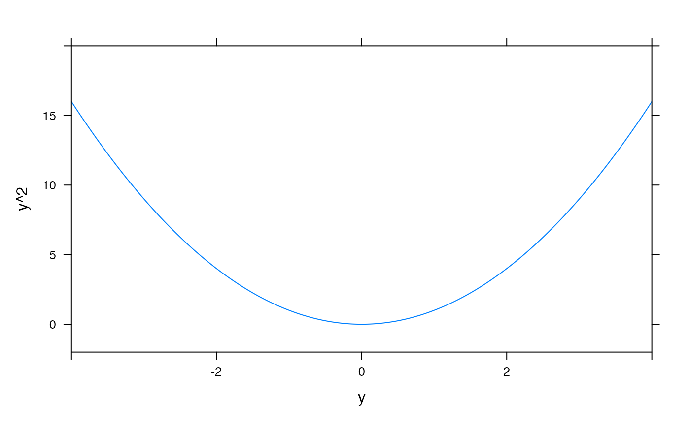# Combining plot elements to show the solution to an inequality plotFun( x^2 -3 ~ x, xlim=c(-4,4), grid=TRUE )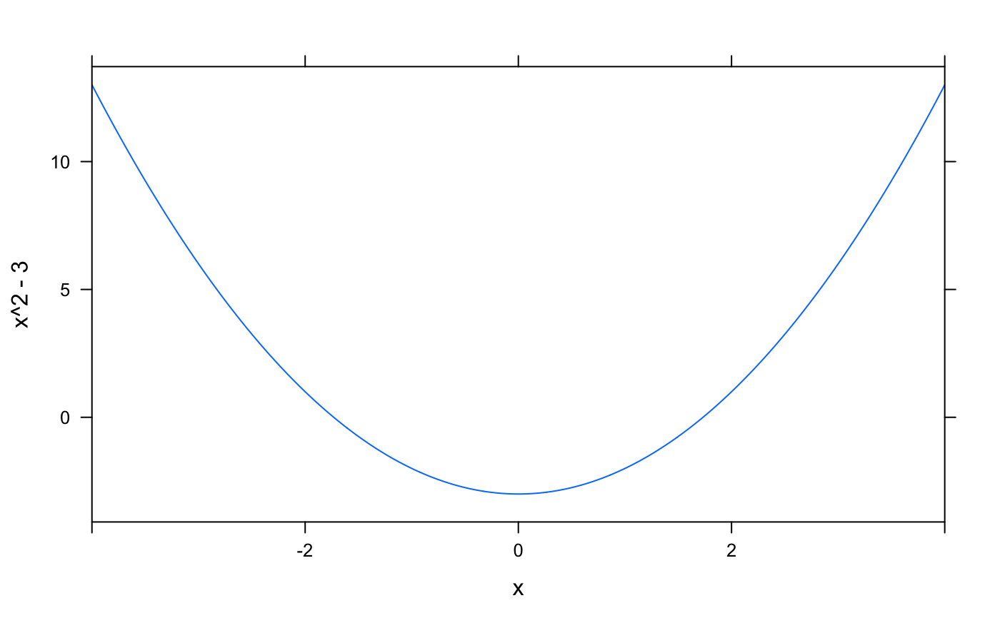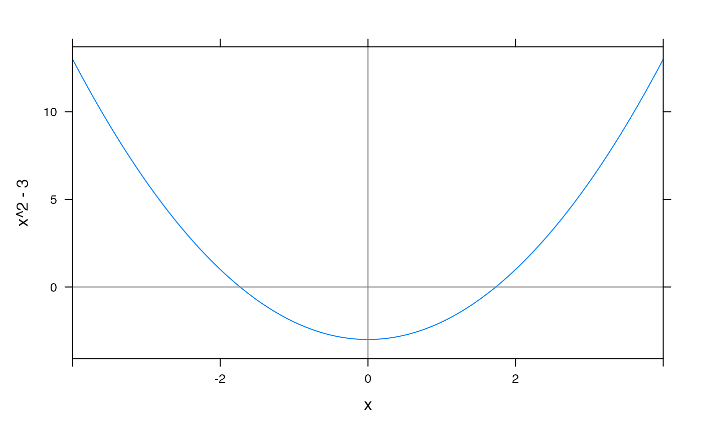plotFun( (x^2 -3) * (x^2 > 3) ~ x, type='h', alpha=.1, lwd=4, col='lightblue', add=TRUE )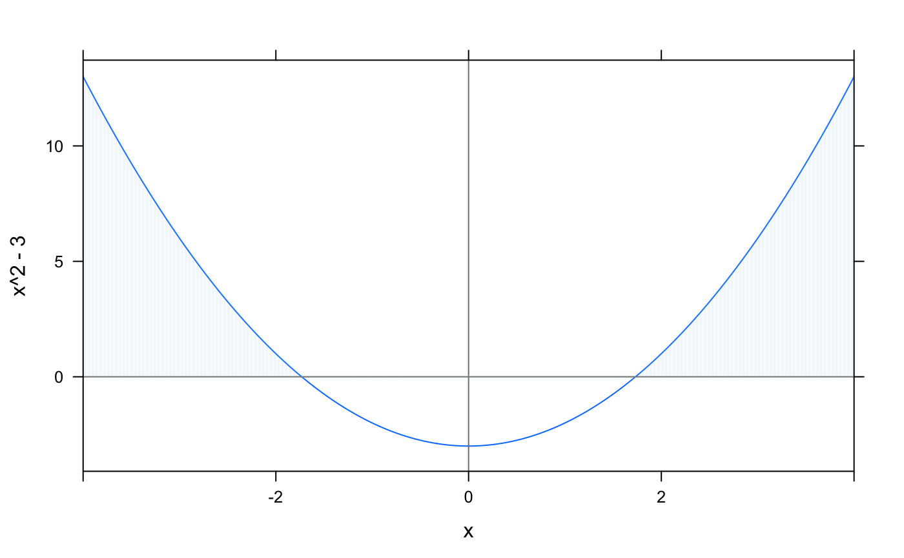plotFun( sin(x) ~ x, groups=cut(x, findZeros(sin(x) ~ x, within=10)$x), col=c('blue','green'), lty=2, lwd=3, xlim=c(-10,10) )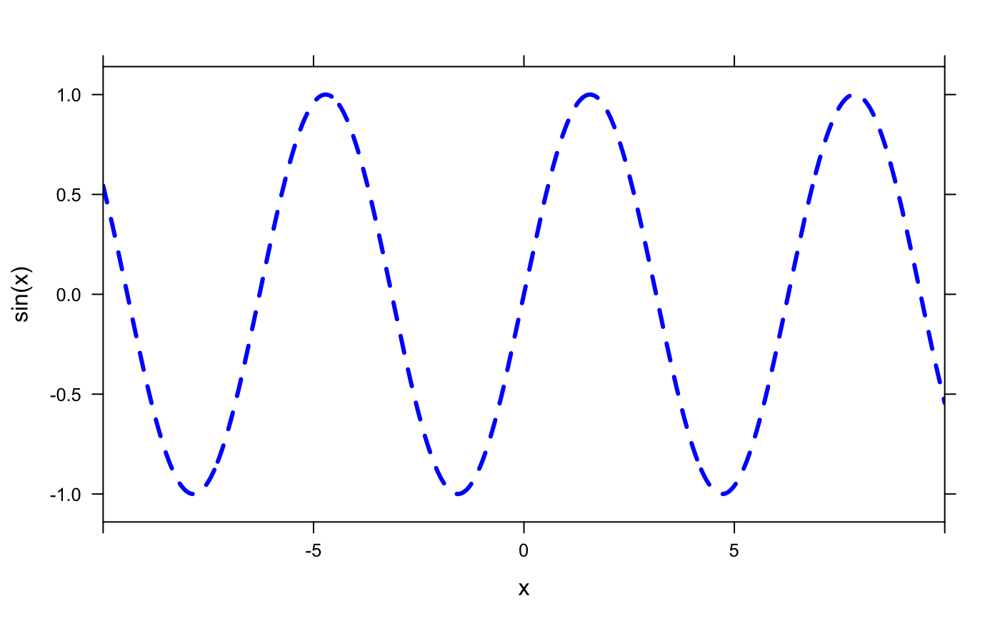plotFun( sin(x) ~ x, groups=cut(x, findZeros(sin(x) ~ x, within=10)$x), col=c(1,2), lty=2, lwd=3, xlim=c(-10,10) )#>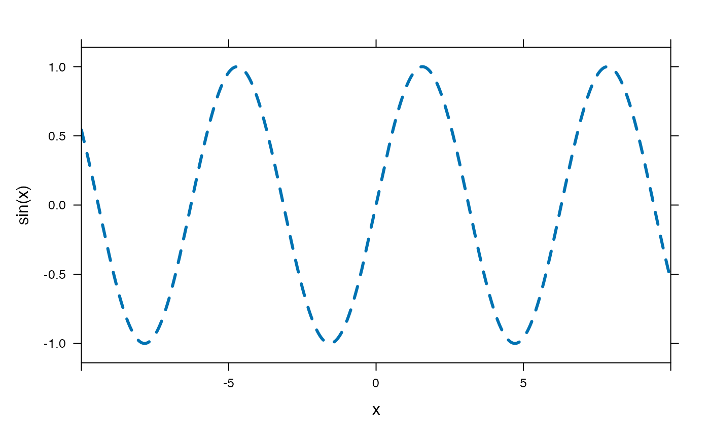## plotFun( sin(2*pi*x/P)*exp(-k*t)~x+t, k=2, P=.3) f <- rfun( ~ u & v ) plotFun( f(u=u,v=v) ~ u & v, u.lim=range(-3,3), v.lim=range(-3,3) )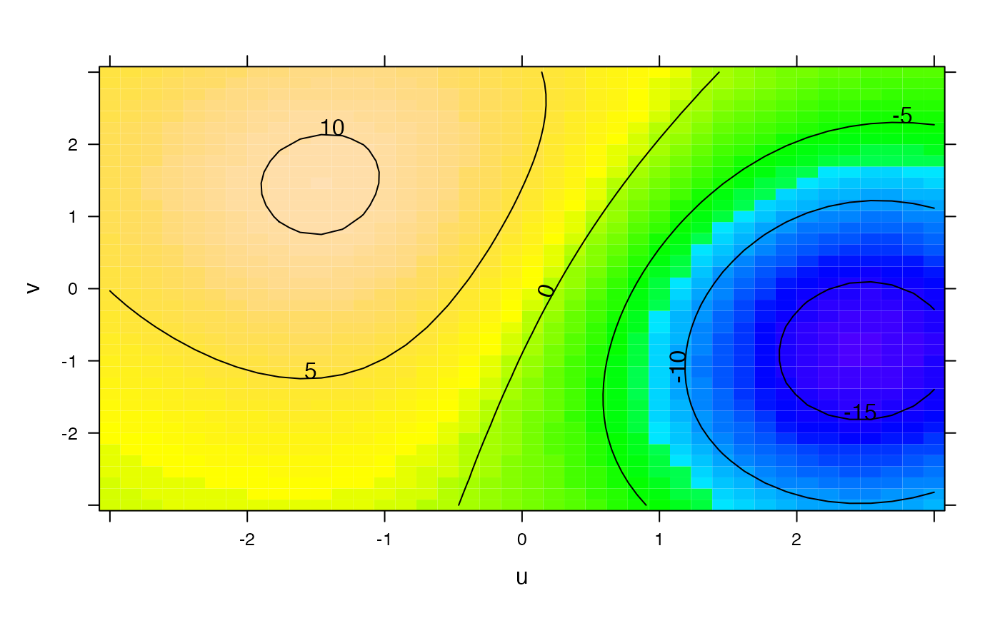plotFun( u^2 + v < 3 ~ u & v, add=TRUE, npts=200 )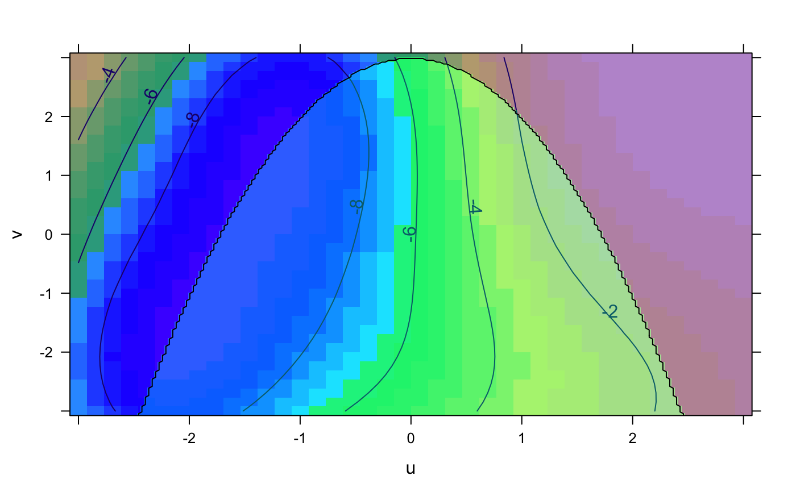if (require(mosaicData)) { # display a linear model using a formula interface model <- lm(wage ~ poly(exper,degree=2), data=CPS85) fit <- makeFun(model) xyplot(wage ~ exper, data=CPS85) plotFun(fit(exper) ~ exper, add=TRUE, lwd=3, col="red") # Can also just give fit since it is a "function of one variable" plotFun(fit, add=TRUE, lwd=2, col='white') }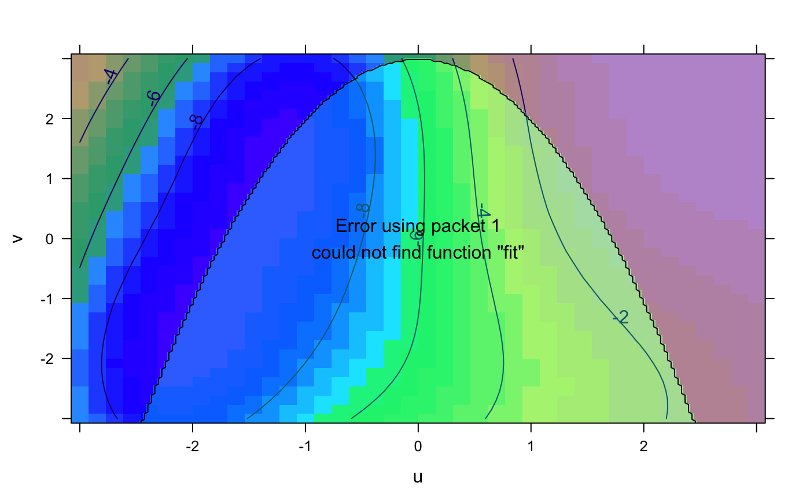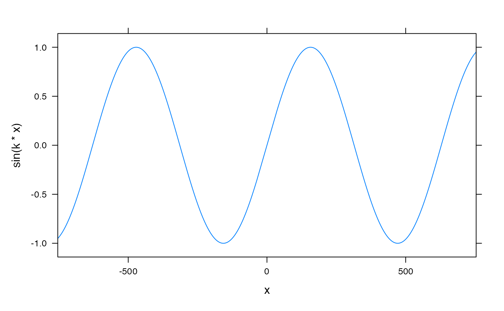# Plotting a linear model with multiple predictors. mod <- lm(length ~ width * sex, data=KidsFeet) fitted.length <- makeFun(mod) xyplot(length ~ width, groups=sex, data=KidsFeet, auto.key=TRUE)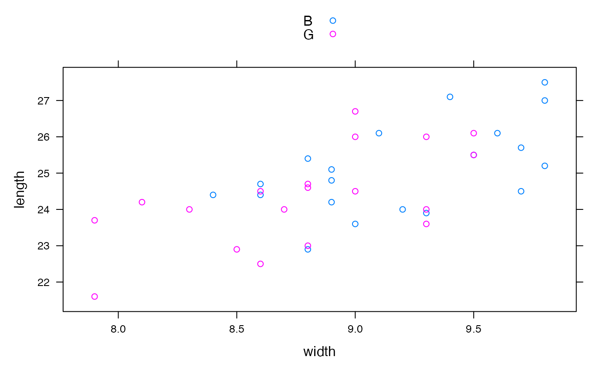plotFun(fitted.length(width, sex="B") ~ width, add=TRUE, col=1)#>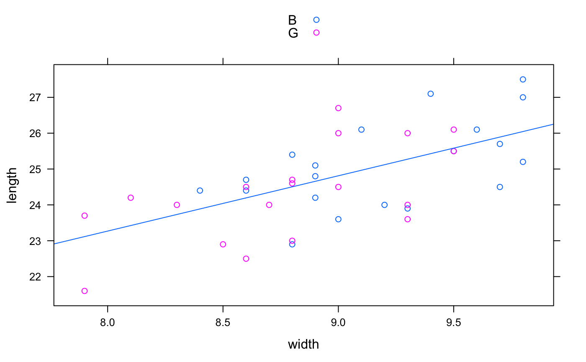plotFun(fitted.length(width, sex="G") ~ width, add=TRUE, col=2)#>#>